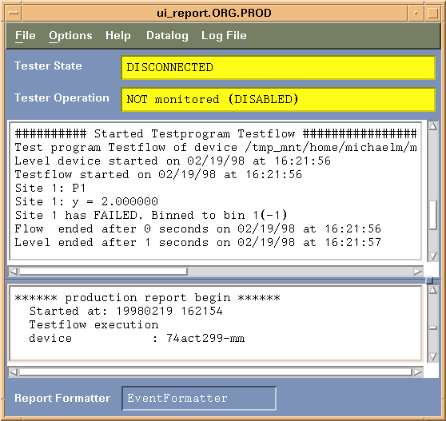

Report window menus
When the Event Formatter is activated, the report window opens. It includes menus that give you access to all functions of the Event Formatter:

As shown in the figure above, the report window contains two separate text panels. The Event Formatter writes all data log data to the upper panel, while messages are directed to the lower panel.
The window contains these menus and commands:
File
- Save: Saves the contents of the text panel in which the cursor is located to a file. A dialog opens which lets you specify the destination file name and location.
- Print: Outputs the contents of the text panel in which the cursor is located to a printer.
Options
- Search: Allows you to search for a string in the text panel in which the cursor is located.
- Clear: Deletes the contents of the text panel in which the cursor is located.
Help
- Char. Translation: Writes a translation table to the lower text panel. This table explains the symbols that represent driven, expected, and received data in the vector result output of the Event Formatter (see also Settings for a functional test).
- Print Separator: Writes a line of slashes to the lower text panel.
- Version: Writes the revision information and the release state of the software to the lower text panel.
- Documentation: Opens the online documentation.
Datalog
- Open Report Dialog: Opens the Report Dialog window. In this window, you can specify which logged data will be written to the report window and in which format.
- Save Current Formatter Settings: Saves your current settings for the Event Formatter to the file .formatterrc in your home directory. For more information about this file, see Settings for the Event Formatter.
- Load Formatter Settings: Loads the saved settings for the Event Formatter from the file .formatterrc in your home directory. For more information about this file, see Settings for the Event Formatter.
- Restore Testsuite Flags: If the Event Formatter made changes to test suite flags, this menu item restores the flags to the state they were in before the first changes were made. See Handling of test suite flags by the Event Formatter for further information.
- FFV spaces ON/OFF between Pins: Toggles whether spaces are inserted between the pin columns in the FFV output in short mode.
- Print Bin Statistics: Writes simple bin statistics with yield calculation to the lower text panel.
- Clear Bins: Sets the number of binned devices for all bins to zero.
Log File
- Save Datalog Stream (and Clear): Saves the complete contents of the
currently active data log stream to a file (and then optionally clears the stream). A dialog
lets you specify the destination file name and location. Whether the stream clearing
functionality is included or not depends on your Settings for the Event Formatter.
The active data log stream can be the system data log stream, as well as a data log stream previously loaded from a file. When the data log stream is cleared, the file it was loaded from stays unchanged.
- Clear Datalog Stream: Deletes all contents of the currently active data log stream. See the previous paragraph for more information.
- Load Datalog Stream: Loads a previously saved data log stream,
processes that stream and generates the output to the report window according to the current
formatter settings. This lets you perform offline analysis of data log data. For example, you
can load a data log stream several times with different Report Dialog settings to generate
reports with different focus (for example, FFV, per-pin results).
Note that the active testflow and test suite flag settings during the generation of the data log stream determine which data actually is contained in the stream. The Event Formatter only filters and formats that data as specified in its current settings.
- Attach to Current Datalog Stream: Re-connects the Event Formatter to the system data log stream, after a saved stream has been loaded.
- START Logging of Formatter Output to File: When activated, all output
that is written to the upper text panel by the Event Formatter is also written to a file. A
dialog opens that lets you specify the destination file name and location. When you specify an
already existing file, this file will be overwritten. A message in the lower text panel
indicates that the logging was activated.Note For performance reasons, writing to the file is buffered. That is, the data is first written to an internal buffer, and when the buffer is full, the buffered data is written to the file. This significantly reduces the number of times the file must be accessed, improving performance. When the test is finished, you must either choose STOP Logging of Formatter Output to File (see below), or terminate the Event Formatter by selecting another report formatter, to force the remaining data in the buffer to be written to the file.
- STOP Logging of Formatter Output to File: Stops the logging of data
to a file that was previously activated using the START Logging of Formatter Output
to File command. A message in the lower text panel indicates that the logging was
stopped.Note When an event is processed by the Event Formatter, the formatter first writes its output to an internal output buffer, and then, when the event has been fully processed, to the report window. The size of this buffer is 8 MB. If the output that is generated by the formatter for one event exceeds this limit, a message at the end of the generated output will indicate that not all event data could be handled. Normally, this can only happen if an extremely large number of vector data is included, or a very large number of waveform plots or shmoo plots. The following example shows such a message.
WARNING: Not enough space in output_buffer to print all FFV results. Buffer left: 34 Bytes; Buffer needed: 1820 Bytes. FFV results for 120 cycles were suppressed!
To reduce the amount of data generated for one event, you can reduce the number of cycles to be logged before and after a failed cycle, as described in Testflow flags, or reduce the resolution of a shmoo plot, or a waveform sample.
Functional changes
- Introduced before SmarTest 6.3.2